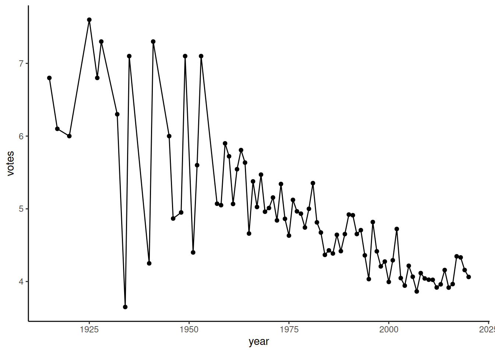
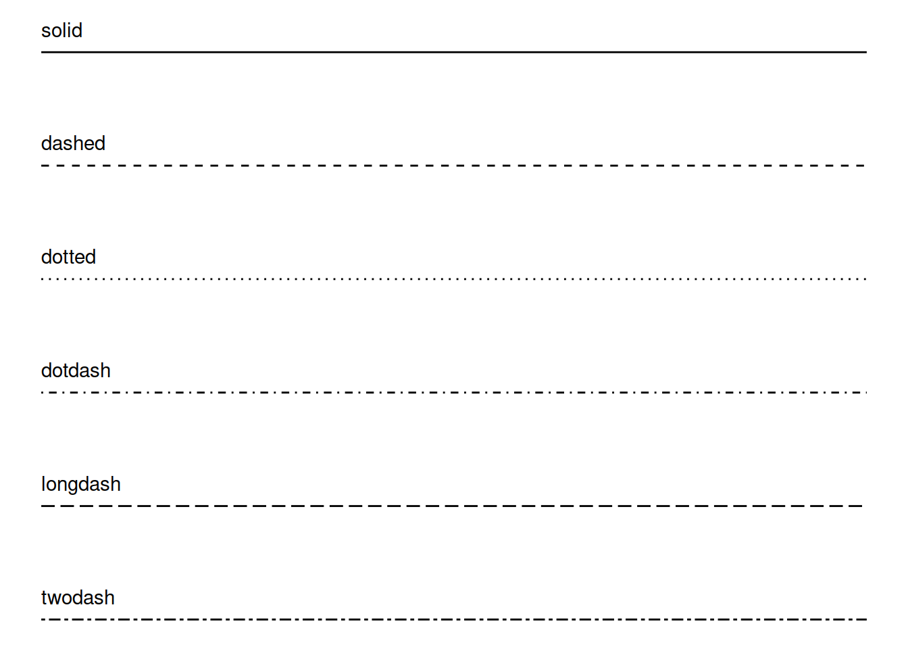
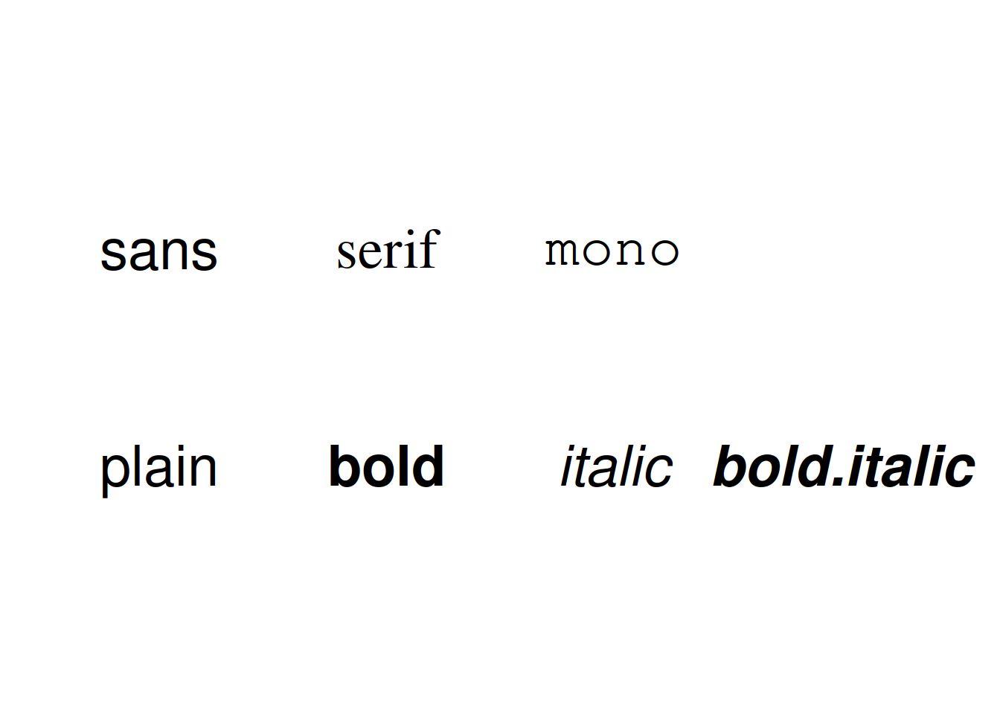

ggplot2 pt1
Решение домашней работы
level 1 (IATYTD)
У вас есть xlsx-файл по популяции и видам пингвинов.
Импортируйте данные из этого файла в R. При работе постарайтесь обойтись только средствами R, не открывая файл в Excel.
Проверьте, что вы импортировали все листы. При необходимости, импортируйте оставшиеся и соберите все в одну таблицу.
# подключаем data.table
library(data.table)
# подключаем пакет для чтения xlsx-файлов
library(readxl)
# файл можно скачать и сохранить на диск руками или кодом
download.file('https://gitlab.com/hse_mar/mar211s/raw/main/data/pinguins.xlsx', 'pings.xlsx')
# смотрим, какие есть листы в файле
sheets <- readxl::excel_sheets('pings.xlsx')
sheets## [1] "adelie" "gentoo" "chinstrap"Проверьте класс объекта и при необходимости преобразуйте в data.table.
Посчитайте количество пингвинов каждого типа (колонка Species).
# читаем листы файла и сразу же склеиваем их с помощью rbind
# можно это делать с помощью промежуточных переменных: sheet1 <- read_excel('pings.xlsx', sheet = sheets[1])
pings <- rbind(
read_excel('pings.xlsx', sheet = sheets[1]),
read_excel('pings.xlsx', sheet = sheets[2]),
read_excel('pings.xlsx', sheet = sheets[3])
)
# преобразовываем в data.table, два варианта можно использовать:
# pings <- as.data.table(pings) или такой:
setDT(pings)
# считаем количество строк и уникальных пингвинов в рамках каждого вида
pings[, list(n_rows = .N, n_pinguins = uniqueN(`Individual ID`)), by = Species]## Species n_rows n_pinguins
## 1: Adelie Penguin (Pygoscelis adeliae) 152 132
## 2: Gentoo penguin (Pygoscelis papua) 124 94
## 3: Chinstrap penguin (Pygoscelis antarctica) 68 58level 2 (HNTR)
- У вас есть данные Tate Gallery по художникам и их произведениям. Импортируйте датасеты по художникам, ссылки на файлы ниже. А лучше воспользуйтесь функцией
download.file()(не забудьте прочитать справку по функции и ее аргументам) для того, чтобы сохранить эти файлы на диск и потом загружать их уже с диска, а не из интернета.
# создаем объект с ссылкой и используем его потом в функци импорта данных
url_artwork <- 'https://raw.githubusercontent.com/rfordatascience/tidytuesday/master/data/2021/2021-01-12/artwork.csv'
artwork <- fread(url_artwork)
url_artists <- "https://github.com/tategallery/collection/raw/master/artist_data.csv"
artists <- fread(url_artists)- С помощью функции
setnames()пакета data.table (илиnames()из базового пакета, если вам так удобнее) переименуйте в файле по художникам колонкиyearOfBirthвyear_of_birth, колонкиyearOFDeath,placeOfBirthиplaceOfDeathаналогично.
# используем функцию пакета setnames
setnames(
# указываем табличку класса data.table
artists,
# указываем вектор названий колонок, которые мы хотим переименовать
old = c('yearOfBirth', 'yearOfDeath', 'placeOfBirth', 'placeOfDeath'),
# указыаем вектор новых названий колонок
new = c('year_of_birth', 'year_of_death', 'place_of_birth', 'place_of_death')
)- посчитайте, сколько художников из списка живы в настоящий момент.
## [1] 1304- посчитайте, сколько среди живущих в настоящий момент художников мужчин и сколько женщин.
## gender N
## 1: Female 297
## 2: Male 944
## 3: 63level 3 (HMP)
- подумайте и покажите решение, как можно узнать структуру файла
artwork, однако полностью импортировать вы его не можете (предположим, что он настолько большой, что повесит систему намертво).
# для того, чтобы узнать структуру, можно скачать только первые несколько строк
# я импортирую с диска, так как когда импортируем по ссылке, все равно происходит скачивание на диск,
# только во временный файл, который потом уже импортируется через в рабочее окружение
artwork_small <- fread('./data/artwork.csv', nrows = 5)- импортируйте только те колонки, которые позволят вам идентифицировать художника, название работы и ее формат (колонка
medium).
# чтобы импортировать только некоторые которые колонки,
# указываем вектор их названий в атрибуте select
artwork <- fread('https://gitlab.com/hse_mar/mar211s/raw/main/data/artwork.csv',
select = c('artist', 'artistId', 'artistRole', 'medium'))- посчитайте, сколько в галерее работ от художников-мужчин и сколько от женщин. Отдельной колонкой выведите статистики по живущим на данный момент художникам.
# склеиваем работы и их авторов, так как в одной таблице artistId, а в другой id
# поэтому используем by.x и by.y. либо надо переменовать, id в artistId и использовать by
artwork <- merge(artwork,
artists[, list(id, gender, year_of_death)],
by.x = 'artistId', by.y = 'id', all.x = TRUE)
artwork[, list(
# считаем количество работ (это тождественно количеству строк в любой колонке) по всем художникам
n_works = length(medium),
# считаем количество работ только по тем художникам, у которых нет даты смерти
n_works_alive = length(medium[is.na(year_of_death)])),
by = gender]## gender n_works n_works_alive
## 1: Male 65774 6883
## 2: 694 504
## 3: Female 2727 1381
## 4: <NA> 6 6- посчитайте, сколько работ разных форматов сделали художницы, умершие до 1800 года (какждый формат – отдельная колонка, форматы даны в колонке
medium). Вам потребуется функцияdcast().
# делаем решейпинг
dcast(
# сначала фильтруем датасет, можно его в отдельную переменную отфильтровать и использовать ее
artwork[gender == 'Female' & year_of_death < 1800],
# указываем, что должно быть по строкам, что в колонках
artist ~ medium,
# указываем функцию агрегации -- простое количество ячеек (что тождественно количеству работ,
# если мы считаем, что нет дублей записей)
fun.aggregate = length
)## artist Graphite and ink on paper Oil paint on canvas
## 1: Beale, Mary 0 1
## 2: Sanders, Ann 0 0
## 3: Spencer, Lady 1 0
## Oil paint on paper Watercolour on paper
## 1: 2 0
## 2: 0 1
## 3: 0 0ggplot2 package
Компоненты графика
Все графики, которые можно создать с помощью пакета, могут быть разделены на несколько компонентов:
- данные
- пространство координат
- визуальные параметры (aesthetics)
- геометрическая форма представления данных (geom)
- статистические вычисления и трансформации (stats)
- параметры смещения графиков на координатной сетке (position adjustment)
- параметры осей (scales)
- фасеты (группировка, facets)
Ниже представлен типовой код создания графика с помощью пакета ggplot2. На графике отражены все перечисленные структурные элементы: данные (объект mpg), координатная сетка (coord_cartesian()), параметры визуализаций (функция aes() и ее аргументы). Основная особенность синтаксиса ggplot2 - его аддитивность, когда объект графика создается путем постепенного добавления к базовому объекту новых элементов и/или параметров визуализаций. Базовый объект создается с помощью функции ggplot(), а различные слои, геометрические объекты или текстовые метки, параметры визуализаций и т.д. - другими функциями, через внутренний оператор +:
ggplot() +
geom_smooth(method = 'lm') +
geom_point(data = mpg, mapping = aes(x = hwy, y = cty, color = cyl)) +
coord_cartesian() +
scale_color_gradient() +
theme_classic()Базовые геомы
geom_point()
Функция geom_point() позволяет конструировать точечные диаграммы (графики рассеяния). Стандартные аргументы функций: data (таблица, данные из которой надо отрисовать), mapping - с помощью этого аргумента указываются, какие колонки таблица как именно будут использованы при отрисовке (какие будут задавать оси, какие - цвета или форму).
# подключаем библиотеки
library(ggplot2)
library(data.table)
# импорт данных
# imdb_link <- 'https://gitlab.com/hse_mar/mar221s/raw/master/data/IMDb%20movies.csv'
imdb_link <- './data/IMDb movies.csv'
tg_cols <- c("director", "title", "original_title", "year",
"genre", "duration", "country", "avg_vote")
imdb <- fread(imdb_link, select = tg_cols)
imdb[, year := as.numeric(year)]## Warning in eval(jsub, SDenv, parent.frame()): NAs introduced by coercionimdb_woody <- imdb[director == 'Woody Allen']
imdb_martin <- imdb[director == 'Martin Scorsese']
imdb_lynch <- imdb[director == 'David Lynch']
imdb_wm <- rbind(imdb_woody, imdb_martin)
imdb_genres <- imdb[genre %in% c('Horror', 'Comedy', 'Drama')]
imdb_genres_scores <- imdb_genres[,
list(n_titles = .N, votes = mean(avg_vote)),
by = list(year, genre)]
theme_set(theme_classic())Рисуем точками фильмы, которые выпустил Дэвид Линч. Задаем базовый объект с помощью ggplot() и на него наслаиваем геом geom_point(). Получаем стандартный график, где черным цветом отрисованы точки, а названия осей взяты из названий колонок.
geom_point() aesthetics
У geom_point() есть множество опций, которые позволяют задать визуальные параметры (aesthetics) точки графика. Самые часто используемые:
- colour: цвет края точки (названимем или rgb-кодом)
- fill: цвет заливки точки (названимем или rgb-кодом)
- shape: форма точки, можно задать номером или по названию.
- size: размер точки
- alpha: прозрачность точки
Типы точек по номерам:

Типы точек по названиям:
Настройка визуальных параметров
Визуальные параметры можно задать двумя методами. Первый - когда форма, цвет или размер точки задаются не пользователем, а берутся из значений колонки в датасете. В таком случае визуальный параметр задается в аргументе mapping.
Повторим предыдущий график (фильмы Линча), и в mapping укажем, что цвет и форма точки задаются по значениям из колонки country, а размер точки берется из значений в колонке duration.
ggplot() +
geom_point(data = imdb_lynch,
mapping = aes(x = year, y = avg_vote,
color = country, shape = country, size = duration)) Второй метод настройки визуальных параметров - когда значение параметра задается прямо в коде, конкретным значением. И этот параметр будет применен ко всем точкам графика. В таком подходе параметры задаются не в аргументе mapping, а как отдельные аргументы функции геома (geom_point()).
На графике ниже все точки, маркирующие фильмы Дэвида Линча, покрашены в красный цвет и сделаны ромбами, независимо от страны или еще каких-то других особенностей фильма. А вот размер точки все также зависит от значений в колонке duration:
ggplot() +
geom_point(data = imdb_lynch,
mapping = aes(x = year, y = avg_vote),
color = 'red', shape = 'diamond', size = 4)geom_line()
Практически идентичный geom_point() по конструкции геом для отрисовки линий. В отличие от geom_point() предполагается, что одному значению по xсоответствует одно значение по y. Либо их может быть несколько, но тогда должна так же быть группирующая переменная, которая позволит различать, что несколько значений по y для одного x принадлежат разным линиям.
Покажем динамику оценко фильмов жанра Horror:
ggplot() +
geom_line(data = imdb_genres_scores[genre == 'Horror'],
mapping = aes(x = year, y = votes))Воспользуемся механизмом добавления слоев и добавим на график еще и точки:
ggplot() +
geom_line(
data = imdb_genres_scores[genre == 'Horror'],
mapping = aes(x = year, y = votes)) +
geom_point(
data = imdb_genres_scores[genre == 'Horror'],
mapping = aes(x = year, y = votes))
geom_line() aesthetics
Основные визуальные параметры схожи с параметрами точек, тип линии задается параметром linetype:
- colour: цвет линии (названием или rgb-кодом)
- linetype: тип линии
- size: толщина линии
- alpha: прозрачность линии
Типы линий можно задать как номером, так и названием: 
Пунктирные линии также можно задать кодом, код должен состоять из 2, 4, 6 или 8 символов шестнадцатиричной системы счисления, где цифры обозначают количество точек. Например, код 3519 означает ‘три отрисуй, 5 пропусти, 1 отрисуй, 9 пропусти, повторяй в цикле’. В результате получается вот такой вот кастомный пунктир:
ggplot() +
geom_line(data = imdb_lynch,
mapping = aes(x = year, y = avg_vote),
linetype = '3519', size = 1)## Warning: Using `size` aesthetic for lines was deprecated in ggplot2 3.4.0.
## ℹ Please use `linewidth` instead.
## This warning is displayed once every 8 hours.
## Call `lifecycle::last_lifecycle_warnings()` to see where this warning was
## generated.Настройка визуальных параметров
Аналогично geom_point(), можно указать конкретные значения, можно указать, что значения должны браться из определенной колонки датасета. Возьмем датасет по жанрам, чтобы можно было в зависимости от жанра указать тип и цвет линии:
ggplot() +
geom_line(data = imdb_genres_scores,
mapping = aes(x = year, y = votes,
group = genre, color = genre, linetype = genre))Если указать эти параметры не в mapping, а задать конкретные значения, то изменены будут параметры всех линий, независимо от жанра:
ggplot() +
geom_line(data = imdb_genres_scores,
mapping = aes(x = year, y = votes,
group = genre, color = genre, linetype = genre),
size = 1.5)геомы визуальных акцентов
geom_vline()
Простейший геом, который позволяет с помощью вертикальной линии акцентировать внимание пользователя на какой-то части кода (vline - vertical line). Точка на оси OX, из которой выводится линия, задается с помощью аргумента xintercept. Этот геом не требует обязательного указания датасета и осей, так как не особо зависит от них - главное, чтобы ось OX была такого же типа, как задается xintercept (число, строка, дата).
Укажем на графике границу 2000 года, чтобы понять, какие фильмы Линч снял после 2010 года.
ggplot() +
geom_point(
data = imdb_lynch,
mapping = aes(x = year, y = avg_vote,
color = country, shape = country, size = duration)) +
geom_vline(xintercept = 2010)geom_hline()
Аналогично geom_vline() позволяет нанести на график горизонтальную линию. Для этого надо указать yintercept - значение на оси OY, из которого будет выводиться линия, параллельная OX. Графически отметим фильмы, которые имеют avg_vote больше 0. У Дэвида Линча был один фильм (согласно датасету), у которого оценка была заметно больше 8, и тот был задолго до 2000 года:
ggplot() +
geom_point(
data = imdb_lynch,
mapping = aes(x = year, y = avg_vote,
color = country, shape = country, size = duration)) +
geom_vline(xintercept = 2010) +
geom_hline(yintercept = 8)geom_text()
Еще один инструмент расстановки акцентов на график - нанесение текстовых меток значений. В самом простом виде geom_text() аналогичен геомам точек и линий, с единственным отличием - метки задаются с помощью аргумента label в mapping. В качестве источника значений для меток указывают колонку датасета, в нашем случае это original_title:
ggplot() +
geom_text(
data = imdb_lynch,
mapping = aes(x = year,
y = avg_vote,
label = original_title)
)geom_text() aesthetics
Для текстовых меток на графике есть ряд дополнительных параметров, помимо размера или цвета. Это семейство шрифта (sans, serif, mono) и тип выделения (обычный, жирный, курсив). Так как текстовые метки обычно приводятся для каких-то других элементов графиков (точек или линий), еще есть аргументы hjust и vjust, для сдвига по вертикали или по горизонтали относительно целевой координаты.
- alpha: прозрачность
- angle: угол (если надо разместить метку под углом к точке)
- colour: цвет
- hjust: сдвиг по вертикали
- vjust: сдвиг по погризонтали
- lineheight: межстрочный интервал
- size: размер
- family: семейство шрифта (с засечками, без засечек)
- fontface: тип выделения
- check_overlap: если TRUE, то текстовые метки размещаются без того, чтобы перекрывать друг друга
Значения для family и fontface:
df_fontface <- data.frame(x = 1:4, fontface = c("plain", "bold", "italic", "bold.italic"))
df_family <- data.frame(x = 1:3, y = 3:1, family = c("sans", "serif", "mono"))
ggplot() +
geom_text(data = df_fontface,
mapping = aes(x = x, y = 0.1, label = fontface, fontface = fontface),
size = 10) +
geom_text(data = df_family,
mapping = aes(x = x, y = 0.2, label = family, family = family),
size = 10) +
lims(x = c(0.5, 4.5), y = c(0, 0.3)) +
theme_void()
Настройка визуальных параметров
Аналогично прочим геомам - можно задать параметры как констранту, можно использовать значения определенных колонок для упарвления цветом, раззмером и т.д. У geom_text() также есть ряд параметров, который не может быть связан со значениями колонок - это запрет на пересечение текстовых меток (check_overlap) и смещение по вертикали/горизонтали (hjust, vjust). Сами по себе текстовые метки не очень инетерсны, поэтому также накладываем слой точек:
ggplot() +
geom_point(
data = imdb_lynch,
mapping = aes(x = year, y = avg_vote, size = duration),
color = 'steelblue') +
geom_text(
data = imdb_lynch,
mapping = aes(x = year, y = avg_vote, label = original_title),
check_overlap = TRUE,
hjust = -0.1
)Дополнительные материалы
Документация по пакету, есть примеры.
Шпаргалки - короткие и наглядные справочные материалы по основам синтаксиса и базовым геомам
R cookbook - сборник примеров и кейсов, как решать наиболее часто встречающиеся задачи при работе с ggplot2. Сгруппировано по разделам.
R Graphics Cookbook, 2nd edition – сборник примеров и кейсов по разным типам визуализаций в базовом R и в ggplot2.
Галерея расширений пакета ggplot2.
{kind=link}
Elegant Graphics for Data Analysis (Use R!) - книга автора ggplot2, с очень внятным описанием базовых идей. При желании, можно найти в сети.
Домашнее задание
Задание 1
С помощью пакета ggplot2 отрисуйте график рассеяния, отражающий связь таких параметров, как carat и price. Используйте уже доступный после установки ggplot2 датасет diamonds, сделайте выборку на 10000 строк (используйте set.seed(1234) для генерации зерна генератора случайных цифр). Удалите строки, в которых carat > 3. Сабсет назовите diamonds_sample. Для конвертации diamonds в data.table вам поможет as.data.table()
Задание 2
Повторите предыдущий график, добавьте выделение цветом бриллиантов разного качества (cut).
Задание 3
Добавьте на график из задания 2 вертикальную линию (OX = 2) и горизонтальную линию (OY = 15000).
Задание 4
Выделите цветами из образованных вертикальной и горизонтальной линиями секторов первый и третий секторы (счет против часовой). Используйте зеленый и красный цвета соответственно, с параметром прозрачности opacity = 0.1. Сами линии можно не рисовать. Вам потребуется погуглить и выбрать необходимый геом для решения этой задачи.